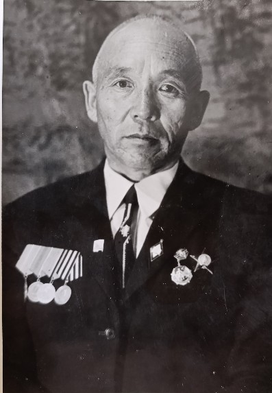
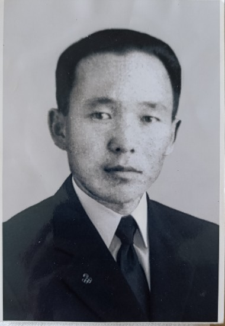
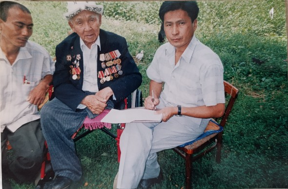
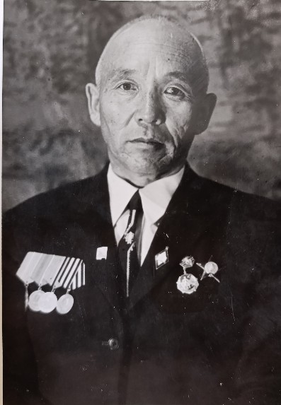
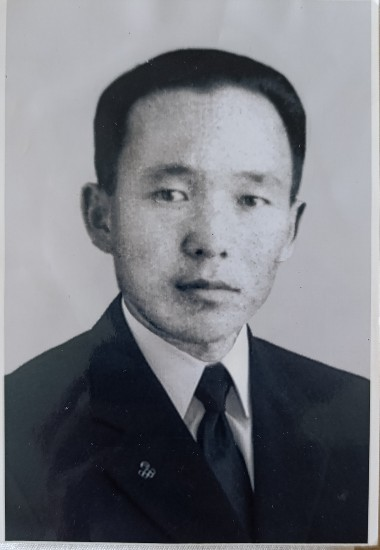
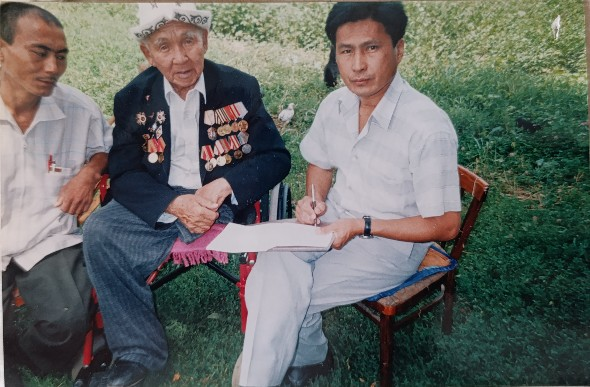

Өмүр баян

Сыдыков Чолук 1924-жылы Чүй районуна караштуу Кегети айылында туулган.
1942-жылы Улуу Ата Мекендик согушка өз каалоосу менен катышып, фронтто эрдик көрсөткөн. 1944-жылы Псков шаарын бошотууда жарадар болуп, бутун жоготкон.
Согуштан кийин Кегети айылына кайтып келип, мугалим, мектеп директору болуп иштеген. Жалпы 45 жыл билим берүү тармагына өмүрүн арнаган.
Алган сыйлыктары
- Улуу Ата Мекендик согуштун I даражадагы ордени
- Улуу Ата Мекендик согуштун II даражадагы ордени
- "Кызыл жылдыз" ордени
- "Ардак белгиси" ордени
- Бир нече юбилейлик жана ардак медалдар
Эмгектери
- 1962 — «Демилге» пьесасы Нарын театрында коюлуп, Жаштар сыйлыгынын лауреаты аталган.
- 2003 — «Анар» повести жарык көргөн.
- 2024 — «Кыргыз махабаты» романы жана «Өмүр термеси» жыйнагы чыккан.
Сүрөттөр
 




